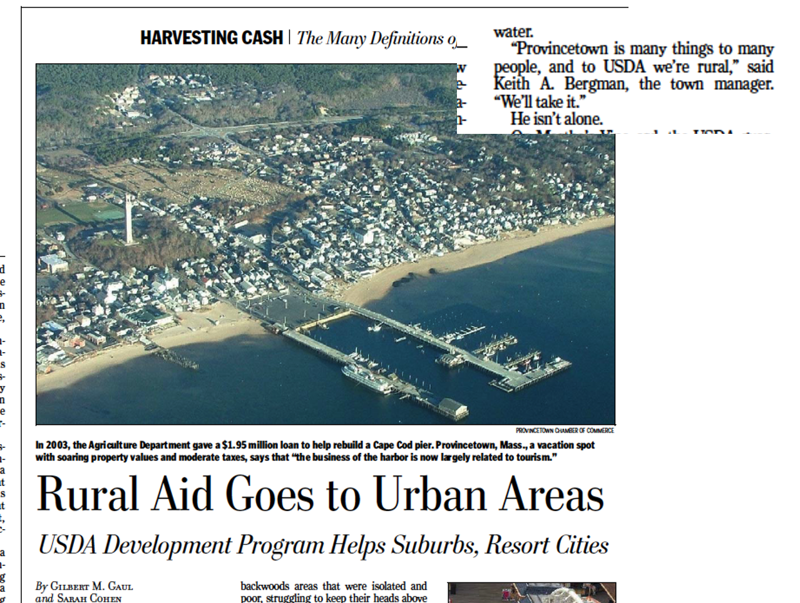
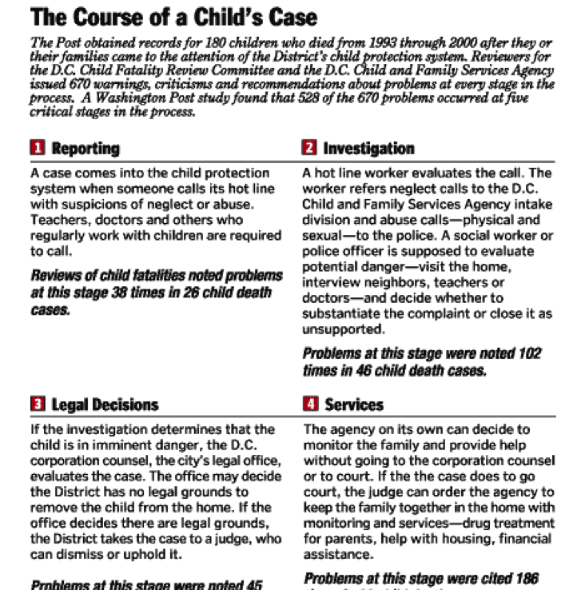

To trace patterns of abuse and neglect in Invisible Lives, to aid in the task of deducing the anonymous dead in Invisible Deaths, and to keep track of a vast number of documents from varied sources, I made, and learned to love, Excel spreadsheets.
-- Katherine Boo, 2000
Obscured behind the techno-babble is a simple truth: the best [data journalism] is born from the heart, not the machine
-- Michael Berens, 1999
Preliminary Schedule
| 2:15 - | Introductions and warmup |
| 2:30 - | The role of data ; cleaning cautions |
| 3:00 - | Data reporting for story: the promise of case level data. |
| 3:30 - | Building your chronology for narrative. |
| 4:00 - | Story structure - the big three |
| 4:45 - | Wordsmithing - precision with action |
Time
Most stories that turn on narratives could be helped by creating your own data, especially a simple spreadsheet that can be sorted and filtered for exactly what you want.
Partway through the story, we turn from the case of Michelle O’Connell to show that this was not the first time that the county sheriff had declined to investigate accusations of domestic violence.
A year before that, Sheriff Shoar’s disciplinary posture had been called into question in a domestic violence case involving a deputy named Halford (Bubba) Harris II.
Two supervisors learned of accusations that Mr. Harris had abused his wife. But no investigation was immediately opened, records show.
One sergeant did prepare an affidavit documenting the accusations. But he was told by his supervisor to hold it back, so he stuck it under the visor in his squad car, where it remained, even after another officer became aware of further incidents, according to Mr. Harris’s internal affairs file.
The case came to a head on Christmas Eve, when his wife fled their house and called the police. Internal affairs officers uncovered other possible acts of domestic violence before his hiring, records show. His wife said that before they married, he had held a knife to her throat and hit her. His ex-wife said he had threatened her with a gun. No charges were filed.
Col. Todd R. Thompson, the sheriff’s director of law enforcement, recommended that Mr. Harris be fired, saying his actions were “particularly egregious and trouble me deeply.”
In an interview, Mr. Harris insisted that he had never engaged in domestic abuse: “Is there proof?”
“They’re telling one story,” he added. “I’ll tell you another one.” He said the state attorney brought no charges and noted that, though they divorced after the Christmas Eve incident, his wife later wrote a letter of support, calling him “a wonderful man and father.”
Sheriff Shoar overruled the dismissal recommendation, citing mitigating factors, like an “exemplary” work record and an absence of citizen complaints.
“I hope you understand how fortunate you are to receive a second chance,” the sheriff wrote to his deputy.
After the decision leaked out and caused an uproar, Mr. Harris said, he was pressured to resign. He is now a deputy in a nearby county.
– “Two Gunshots on a Summer Night”
Much of this passage came from a series of internal affairs reports done after the last incident. Here is one of them
Here is the spreadsheet we made out of the report.
Characteristics that help you with writing:
- Include a fact-check and source column. Make sure you know if you can use the item.
- Use tags for people, places and topics, for filtering.
- Including timing notes so you don’t get paralyzed when you don’t know an exact date.
Place

PROVINCETOWN, Mass. — In a few weeks, artists, lawyers and bankers will be- gin arriving here for the busy summer sea- son on high-speed ferries that take 90 min- utes to make the trip from Boston. They will land at a recently refurbished munici- pal dock that was built with the help of a $1.95 million low-interest loan from the U.S. Department of Agriculture.
A few blocks away, the Provincetown Art Association and Museum has used nearly $3 million in grants and loans from the Ag- riculture Department to add gallery space and renovate a historic sea captain’s house. A short drive back down the Cape, the de- partment is financing a new actors theater in Wellfleet and recently awarded a grant to a garden center in Hyannis to build a wind- mill.
Although Cape Cod is only a short trip from Boston and Providence, R.I., and is home to some of the wealthiest beach towns in the United States, to the Agricul- ture Department it meets the definition of rural America. That means it qualifies for aid originally intended for farmland and backwoods areas that were isolated and poor, struggling to keep their heads above water.
“Provincetown is many things to many people, and to USDA we’re rural,” said Keith A. Bergman, the town manager. “We’ll take it.”
He isn’t alone.
On Martha’s Vineyard, the USDA guar- anteed a $4.5 million loan for the popular Black Dog Tavern. The loan, which has since been repaid, was to refinance the tav- ern’s mortgage and expand Black Dog’s re- tail clothing stores. On Nantucket, where the population swells to the size of a small city in summer months, the Agriculture De- partment provides rental subsidies for families priced out of the local market.
This is an example of a story in which the central finding is difficult to understand until you know the details of the cases.
Chapters
A typical structure when working in chapters is to find themes in the process that you’re describing. Take the process step by step, wherever the system can fall apart, and build a chapter around it. Sometimes include a map to the process for readers:

Examples:
- In Housing Court evictions, the process starts with a misuse of the filing system, which lets landlords file a case without any proof. This is the first chapter, with a strong place focus.
- Then, a process server is supposed to let you know you’ve been served. This is another chapter, about how they lie on the forms, including a place where a server claimed he’d gone to 22 homes in 5 minutes, which would have been across three buildings and more than 20 stories.
- The lawyers show up for the plaintiffs, but the defendants are helpless. The third chapter is on the chaos of the court.
- etc. *